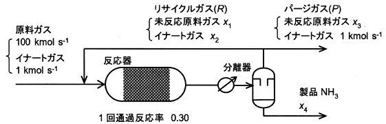

令和4年度 問31 有機化学及び燃料
図のアンモニアプロセスは反応式がN2+3H2→2NH3であり、反応器の1回通過反応率は0.30とする。原料（N2とH2の1：3混合ガス）100 kmol/sにイナートガス（Ar、CH4）が1 kmol/s同伴される。このためパージ操作が必要である。このプロセス中の流量x1、x2、x3、x4［kmol/s］を下のプロセス図中のようにする。パージガスとリサイクルガスの組成は同じである。ここで、反応器の1回通過反応率が0.30なので、
（100+x1）（1-0.30）＝x3＋x1
である。パージガスとリサイクルガスの流量比率P：R＝1：50のとき、リサイクルガスの流量R（＝x1＋x2）は以下のどれに近いか。

①
50 kmol/s
②
80 kmol/s
③
10 kmol/s
④
50 kmol/s
⑤
70 kmol/s
正答
⑤ 70 kmol/s
パージ比率R：P=50：1のため、(x1+x2)＝50(x3＋1)です。分離器から出てくるガスを50：1で分配しているだけであり、リサイクルガスRとパージガスPの組成は同じです。そのため、パージガス中のイナートガスの組成1 kmol s-1に対し、リサイクルガス中のイナートガスの組成x2は50倍の50 kmol s-1となります。つまり(x1+50)＝50(x3＋1)で表せます。
上式および問題文に挙げられた(100+x1)(1-0.30)＝x1+x3を用いてx1を求めると、219 kmol s-1となります。
よって、、、リサイクルガス流量R＝x1+x2＝219＋50＝269 kmol s-1、最も近い値は270 kmol s-1です。